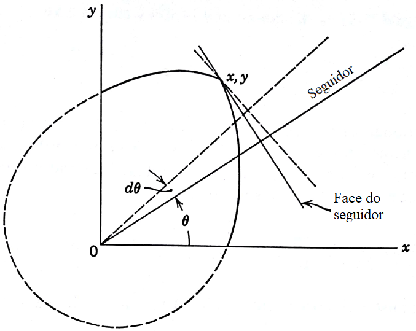
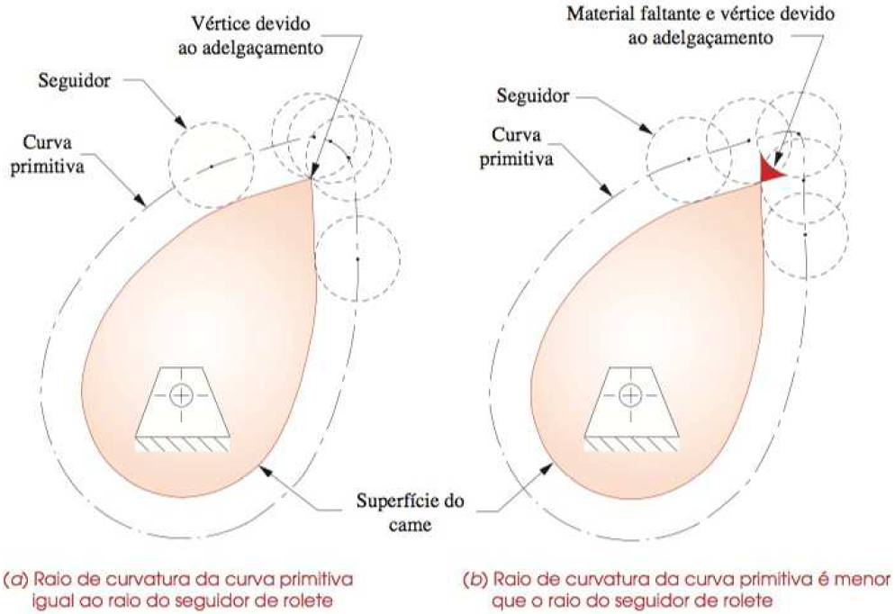

O projeto analítico de cames transforma a lei de movimento em geometria. A pergunta deixa de ser apenas qual deslocamento se deseja e passa a incluir: qual raio de base é necessário, qual será o ângulo de pressão e se o perfil resultante é fisicamente fabricável.
Seguidor plano
No came com seguidor de face plana, o contato ocorre em uma superfície plana do seguidor. A geometria pode ser construída a partir do deslocamento prescrito, mas é preciso garantir que o perfil não gere pontas e que a largura do seguidor seja suficiente para manter contato durante todo o ciclo.
Quando o raio de base é pequeno em relação ao curso e à variação da curva, o came pode desenvolver regiões agudas. Essas regiões são indesejáveis porque dificultam fabricação, concentram tensão e prejudicam o contato.

Seguidor de rolete
No seguidor de rolete, costuma-se trabalhar primeiro com a curva primitiva, que representa o caminho do centro do rolete. O perfil real do came é obtido deslocando essa curva pela geometria do rolete. Isso melhora o contato, mas adiciona a restrição de que o raio do rolete não pode ser escolhido sem verificar curvatura.
Se o rolete for grande demais para a curvatura local da curva primitiva, o perfil pode sofrer interferência ou gerar contornos inviáveis. Por isso a escolha de \(R_r\) depende da lei de movimento e do raio primitivo, não apenas de disponibilidade de componente.
Ângulo de pressão
O ângulo de pressão mede o desvio entre a direção de transmissão da força e a direção de movimento desejada do seguidor. Valores altos aumentam componentes laterais, atrito, carregamento em guias e risco de funcionamento ruim. Em muitos projetos didáticos, usa-se como referência manter o ângulo máximo abaixo de cerca de 30 graus.
A expressão mostra duas formas gerais de reduzir o ângulo: aumentar dimensões como o raio de base ou alterar a curva de deslocamento para reduzir picos de \(dS/d\theta\). A excentricidade \(e\) também pode ser usada como recurso de projeto, mas precisa ser avaliada nos dois sentidos de movimento.
Raio de base
Aumentar o raio de base tende a reduzir o ângulo de pressão e suavizar o perfil, mas aumenta o tamanho do mecanismo. Diminuir o raio compacta o came, porém pode gerar pressão elevada e curvatura desfavorável. O projeto é, portanto, um compromisso entre espaço, contato, forças e fabricação.
Curvatura e risco de pontas
A curvatura indica quão rapidamente a direção da curva muda. Em regiões de curvatura severa, o perfil pode ficar pontudo ou incompatível com o rolete. A verificação de raio de curvatura mínimo é uma etapa essencial depois de escolher \(S(\theta)\), \(R_0\) e \(R_r\).
Para o seguidor de rolete, a ideia central é comparar a curvatura da curva primitiva com o raio do rolete. Se a superfície real do came exigir uma curvatura menor do que a permitida pelo rolete, haverá problema geométrico.

Sequência de verificação
- defina o ciclo e a curva de deslocamento por trechos;
- calcule deslocamento e derivadas relevantes;
- escolha um raio de base inicial ou raio primitivo inicial;
- avalie o ângulo de pressão máximo;
- verifique curvatura e risco de pontas;
- ajuste raio, rolete, excentricidade ou lei de movimento se necessário.
O projeto analítico não substitui julgamento mecânico. Ele organiza as verificações para que a forma final do came seja consequência de requisitos mensuráveis, não apenas de uma curva desenhada visualmente.